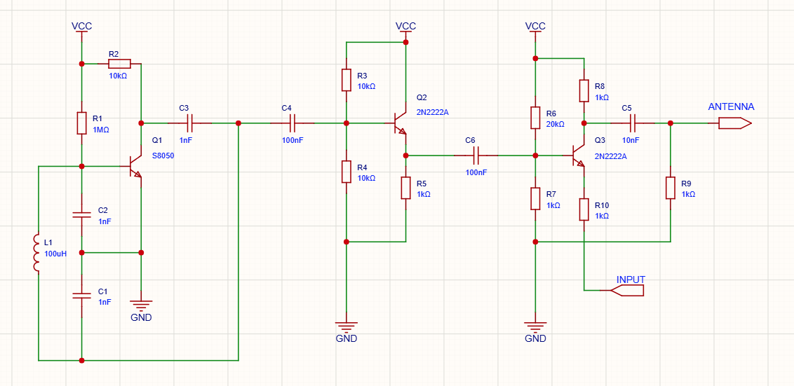
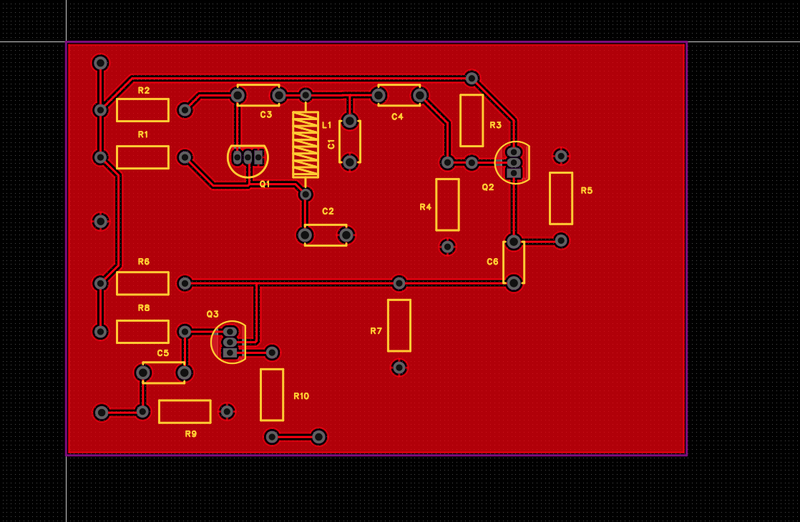

Overview
I had previously made a crude version of an AM transmitter by using an arduino to handle the carrier generation as well as modulation, however I wanted to design and build one using discrete components. After many failed versions and through lots of testing, I made progress and eventually the circuit was designed and tested in stages before being assembled onto a protoboard.
The completed transmitter successfully generates an RF carrier, modulates the carrier with an audio signal, and produces a signal that can be received using an AM radio.
Design Goals
- Design an AM transmitter from discrete components
- Generate a stable RF carrier
- Introduce an audio signal through amplitude modulation
- Amplify the RF signal
- Construct the final circuit on a protoboard
- Verify operation using electronic test equipment
Block Diagram
The transmitter is divided into several functional stages:
RF Oscillator → Buffer → Amplifier & Modulator → Output
Schematic

RF Oscillator
The RF oscillator generates the carrier signal used for transmission. The oscillator was designed around a specified carrier frequency 710 MHz and tested independently before the rest of the transmitter was designed
The frequency is primarily determined by the components used in the oscillator. Component values were selected based on the desired operating frequency and then verified experimentally.
Buffer Stage
The buffer allows the carrier frequency to become usable. Without a buffer stage, the rest of the transmitter would load the oscillator, which would cause it to stop oscillating. I chose the common collector amplifier configuration for this buffer due to its high input impedance and low output impedance.
Amplification & AM Modulation
The RF amplifier increases the amplitude of the carrier signal before it is sent to the output. In this stage I used a common emitter amplifier configuration because it can be used to amplify and modulate a signal in one step by shifting the bias point of the transistor. An audio signal is then introduced into the transmitter so that the amplitude of the RF carrier varies with the audio waveform. This produces the amplitude-modulated signal that can be recovered by an AM receiver.
Construction
After testing the individual stages on a breadboard and verified to work, I attached an antenna and was pleased to hear my signal being picked up by an AM radio. I then moved to put the circuit onto a board. I designed and put together a layout for a custom pcb.

I ended up going with a proto board because I already had them on hand and would be easy enough to solder and assemble

Testing and Debugging
The circuit was tested incrementally rather than assembling the entire transmitter at once. This made it possible to isolate problems within individual stages.
One of the challenges encountered during development, which turned out to be an excellent learning opportunity, was preventing the following amplifier stage from excessively loading the oscillator. After much testing and researching I diagnosed the issue being bad impedance matching.
Results
The completed transmitter successfully produced an AM signal and transmitted an audio signal that could be received using an AM radio. The final circuit was assembled entirely from discrete components on a protoboard.
What I Learned
This project gave me experience with RF oscillators, transistor amplifiers, impedance loading, amplitude modulation,pcb and protoboard construction, and troubleshooting analog circuits. It also demonstrated the difference between theoretical circuit behavior and the behavior of a physical RF circuit.